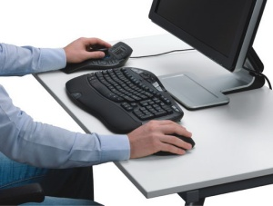

Ekranınızdaki 3D modelleri elinizde tutuyormuşçasına kontrol ettiğinizi hayal edin. Ya da 3D ortamlarda helikopter gibi uçtuğunuzu.
3Dconnexion 3D fareleri, sizi klasik klavye ve fare ile ulaşamayacağınız bir kontrol seviyesine yükseltir.
Çalıştığınız modeli kaydırmak, büyütmek ve çevirmek için tek tek farenize tıklamayı, sonra seçmek, oluşturmak ve düzenlemek için tekrar duraklamayı unutun. 3Dconnexion 3D Fare ile, bunların hepsini aynı anda yapın!..
130'den fazla 3D program desteklenir
AutoCAD | Pro/ENGINEER | SolidWorks | Softimage | CATIA V6 | NX | Solid Edge | Inventor
| 3ds Max | Maya | SketchUp | CATIA V5
Tam liste için tıklayınız;
www.3dconnexion.com/supported-software
Daha geniş bilgi için:
www.3dconnexion.com
www.TurkCADCAM.net/urun/2010/3Dconnexion-01
Her bütçe için
Rekabetçi bir fiyatta, ideal bir 3D mouse sizin için mevcut. Ayrıca 3D farelere yapılan yatırımın geri dönüşü için yapılan araştırma için: www.TurkCADCAM.net/rapor/3D-mouse
Test imkanı
Eğer ürünlerimizi test etmek isterseniz, listede yer alan bayilerimizle ya da bizimle
(eesales@3dconnexion.com) iletişime geçebilirsiniz.
Nasıl satın alabilirim?
Türkiye'de bir çok bayiimiz mevcuttur. Liste için:
www.3dconnexion.com/buy/locate-a-reseller.html
|